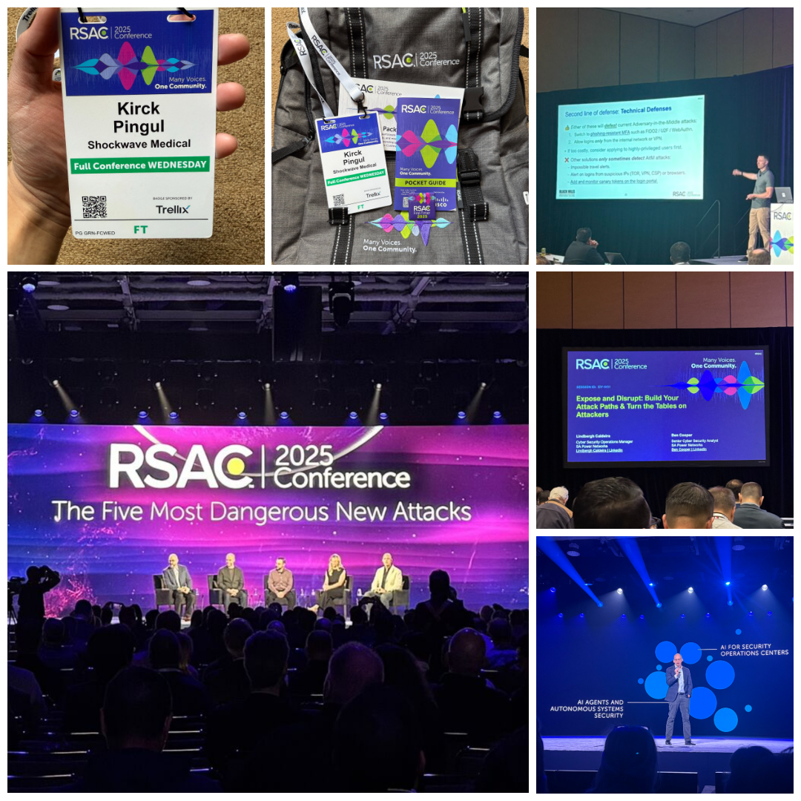

RSA Conference 2025 marked my first time attending one of the world’s largest and most influential cybersecurity gatherings—and it did not disappoint. From the moment I stepped into the Moscone Center in San Francisco, I was struck by the energy, scale, and sheer depth of knowledge packed into every corner of the event.
One of the biggest takeaways this year was the growing influence of artificial intelligence (AI) in cybersecurity. It wasn’t just a theme—it was everywhere. Conversations centered on how AI is reshaping threat detection, automating responses, and creating new challenges around identity and trust. The concept of “agentic AI” came up frequently, highlighting the potential risks of autonomous systems making real-time decisions with minimal oversight.
The keynotes this year set the tone for the conference’s focus on innovation, responsibility, and defense.
I also took the opportunity to attend several technical track sessions that offered a deeper dive into today’s most pressing cyber threats. Two that stood out in particular were:
This session focused on flipping the script—approaching defense from an attacker’s point of view. It showcased how building attack paths and mapping exposures proactively can help security teams stay ahead of identity-based threats.
An eye-opening look into a social engineering campaign that successfully breached high-security environments. The session walked through the development and execution of the attack, reinforcing the idea that some of the most effective tactics still target human vulnerabilities.
Beyond the technical content, what really impressed me was the emphasis on the human side of cybersecurity. There were thoughtful conversations about trust, diversity, and ethics—reminding us that the strength of our defenses isn’t just about tools, but also about people.
Between the insightful sessions, the hands-on experiences in the expo hall, and the chance to connect with professionals from all corners of the industry, RSA Conference 2025 was nothing short of inspiring. It left me with a renewed sense of purpose and a deeper appreciation for the complexity—and collaboration—that defines this field.
A huge thank you to the RSA Conference team, speakers, and everyone who made this event possible. For a first-time attendee, it was an unforgettable experience. Already looking forward to next year.
